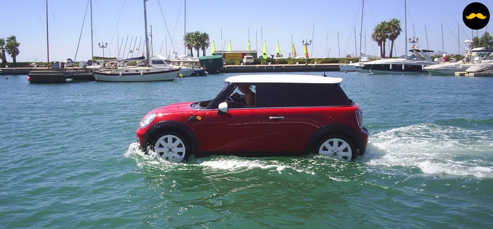

Cliquez ici pour commencer !

Question : "Lors d'une balade dominicale, vous vous retrouvez dans cette situation :"
Réponse 1 : "J'attends de croiser une autre voiture pour voir si c'est normal."
Réponse 2 : "J'active mes essuie-glaces au plus vite."
Réponse 3 : "Aucun panneau n'indiquait un risque d'aquaplanning, je reste relax."
Réponse 4 : "Je file chez le carrossier car l'eau de mer attaque la peinture."
Question : "Lors d'une balade dominicale, vous vous retrouvez dans cette situation :"
"Aucun panneau n'indiquait un risque d'aquaplanning, je reste relax."
Cliquez ici pour continuer
Cliquez ici pour continuer

Question : "Je viens de doubler un tank et un homme tente de sauter sur ma voiture :"
Réponse 1 : "Je mets mon clignotant et me rabats dans le plus grand calme."
Réponse 2 : "Je klaxonne."
Réponse 3 : "J'active mes feux de brouillard arrière."
Réponse 4 : "Je freine sec pour que l'homme me dépasse et s'écrase."
Question : "Je viens de doubler un tank et un homme tente de sauter sur ma voiture :"
"Je klaxonne."
Cliquez ici pour continuer
Cliquez ici pour continuer

Question : "Je suis sur l'autoroute. Un autostoppeur se présente sur le bas côté :"
Réponse 1 : "J'ouvre la portière droite afin de le moucher."
Réponse 2 : "Je l'écrase de plein fouet en mettant les essuie-glaces."
Réponse 3 : "Je le prends en stop pour mieux le jeter à 130 km/h."
Réponse 4 : "Je klaxonne."
Question : "Je suis sur l'autoroute. Un autostoppeur se présente sur le bas côté :"
"Je klaxonne."
Cliquez ici pour continuer
Cliquez ici pour continuer

Question : "Un agent de la force publique me fait signe de m'arrêter :"
Réponse 1 : "Je roule trop vite pour m'arrêter sur une distance raisonnable."
Réponse 2 : "J'écrase l'agent. Personne n'arrête Sergio."
Réponse 3 : "Je klaxonne."
Réponse 4 : "Je m'arrête afin de connaître mon record de vitesse."
Question : "Un agent de la force publique me fait signe de m'arrêter :"
"Je klaxonne."
Cliquez ici pour continuer
Cliquez ici pour continuer

Question : "Dans cette situation, je dois :"
Réponse 1 : "Garder mon sang-froid et ne pas chercher à contredire cet ami motard."
Réponse 2 : "Signaler à ce preux chevalier que son destrier est très bruyant et qu'il aurait tendance
à faire de l'huile."
Réponse 3 : "Saluer ce motard comme il le fait si gentiment."
Réponse 4 : "Faire demi-tour et suivre ce motard. Il doit connapitre un bon bar dans le coin pour
se torcher la gueule et se déguiser de la sorte."
Question : "Dans cette situation, je dois :"
"Signaler à ce preux chevalier que son destrier est très bruyant et qu'il aurait tendance à faire de
l'huile."
Cliquez ici pour continuer
Cliquez ici pour continuer